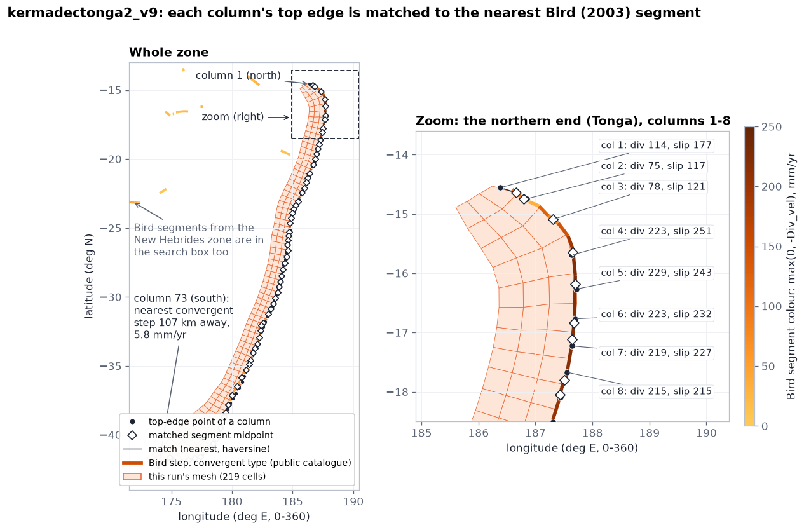
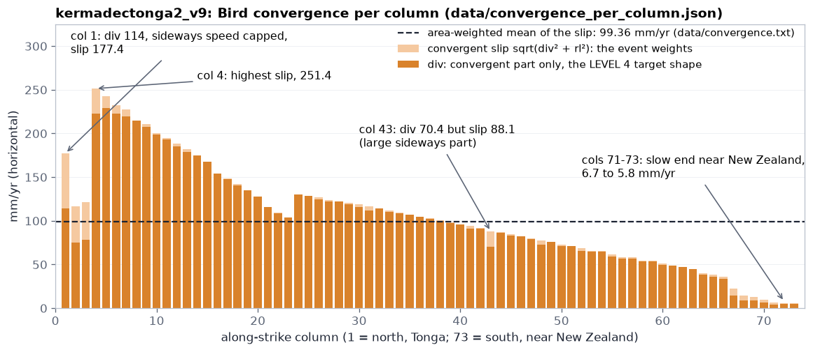
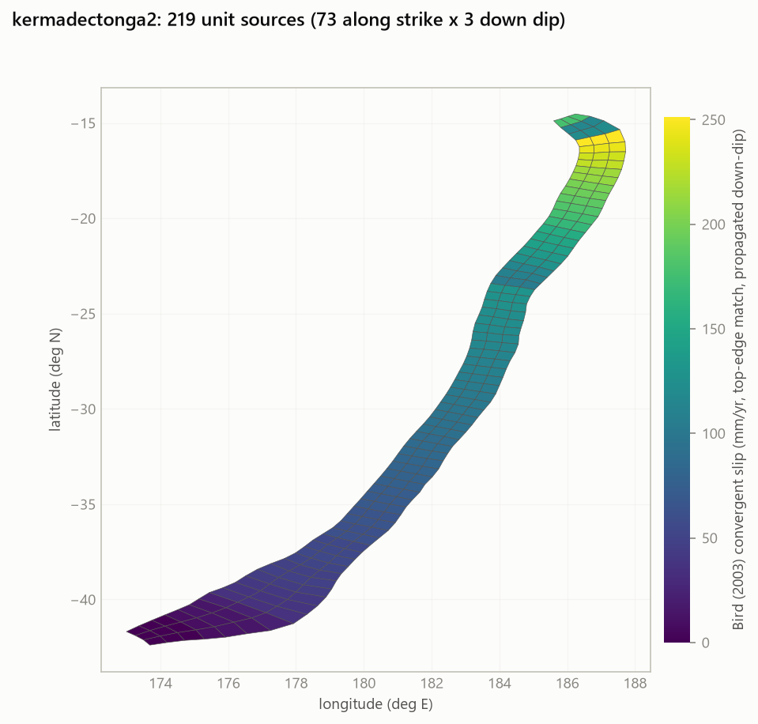
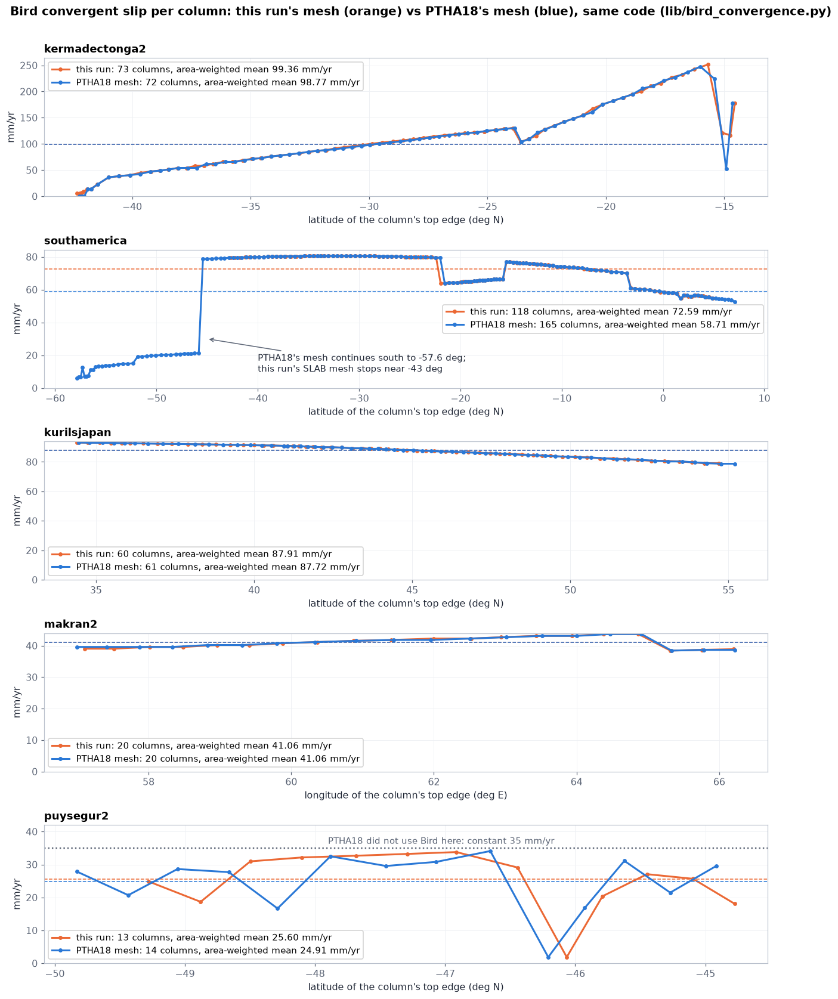
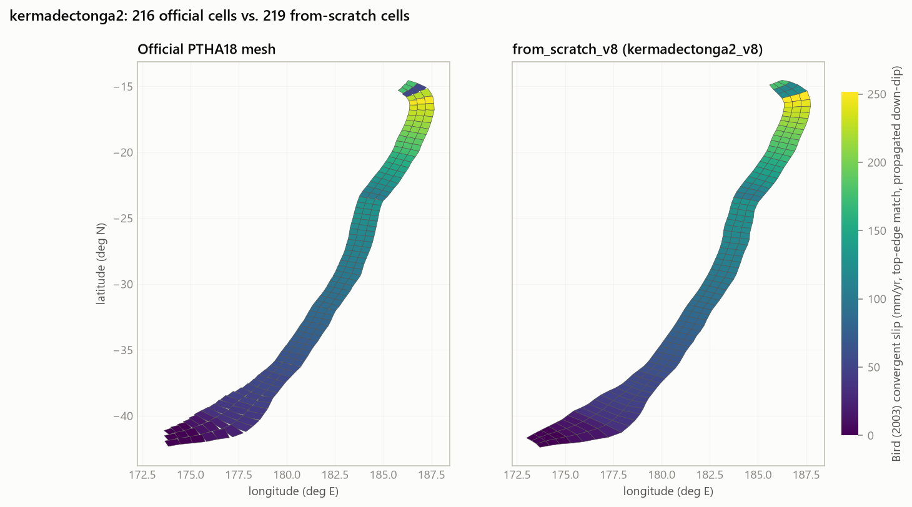
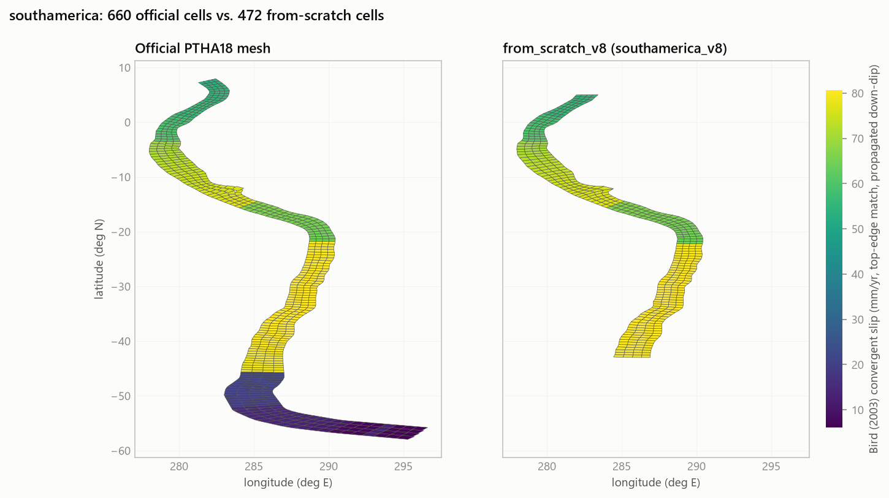

3. Plate convergence
How fast the two plates move towards each other decides how many earthquakes the zone can have. Step 3 reads that speed from Bird's (2003) global plate model, under every column of cells of the mesh, exactly the way PTHA18 did, and hands three things to the engine: one number for the whole zone and two profiles along the zone.
data/slab2/unit_source_grid.npy (step 2's mesh) and one of two plate-boundary tables, chosen by generate.py --convergence: bird (default), Bird's public catalogue, or bird-griffin, the table PTHA18 used; both in from_scratch_v12/data/bird/ (the two tables, which zones differ; nothing is downloaded)data/convergence.txt, data/convergence_per_cell.npy, data/convergence_per_column.json (all described below)Where in the code: templates/step3_convergence.py.tmpl (the step), lib/bird_convergence.py column_convergence() (the method, shared with step 8), python_logic_tree_v12/run_logic_tree.py (how the engine uses the result).
At a glance
Bird's model gives the plate speed along short pieces of plate boundary. Step 3 finds, for every column of cells, the nearest piece, turns its speeds into a "convergent slip" rate, and passes three results to the engine. Each result has one job.
Why the plate speed matters
At a subduction zone one tectonic plate slides under another (see PTHA in plain words). The convergence rate is how fast the two plates approach each other, in millimetres per year. Where the plates are stuck together at the fault, the motion is not free: the fault "falls behind" by that much every year, and an earthquake later makes up for it by slipping several metres at once.
This is the idea behind the moment balance (LEVEL 2 of the engine): over a long time, the total slip of all earthquakes must equal the slip the plates have accumulated. So the faster the convergence, the more (or the larger) earthquakes the zone must have. Only part of the motion is released by earthquakes; that fraction is the seismic coupling, which is uncertain and is a branch of the logic tree (LEVEL 1). The convergence itself is taken as known: it comes from a plate model.
Convergence also varies along a zone. At Tonga the plates converge at more than 200 mm/yr, near New Zealand at less than 20 mm/yr (figures below). PTHA18 uses that variation twice: to make ruptures more likely where the plates move faster, and to check that the modelled earthquakes release slip in the same along-zone pattern (per column).
Bird's plate model
Bird (2003), "An updated digital model of plate boundaries" (the PB2002 model), divides every plate boundary on Earth into short straight steps (segments of a few tens of km) and gives, for each, the velocity of one plate relative to the other, split in two parts:
- Div_vel, the divergent part, across the boundary, in mm/yr. Negative means the plates approach (convergence), positive means they separate.
- RL_vel, the right-lateral part, along the boundary, in mm/yr: the sideways sliding. Its sign says the direction.
Which Bird table: --convergence bird or bird-griffin
The package holds two versions of Bird's model, both in from_scratch_v12/data/bird/, and generate.py --convergence picks one (all 8 examples: bird, the default). Nothing is read from rptha/. Where PTHA18 took each zone's convergence from, and how much the two tables differ there, zone by zone: Bird or Bird + Griffin, per zone.
--convergence bird (default): Bird's public catalogue | --convergence bird-griffin (and always step 8): PTHA18's table | |
|---|---|---|
| File | from_scratch_v12/data/bird/PB2002_steps.dat.txt.zip, Bird's own supplementary data, unchanged | from_scratch_v12/data/bird/bird_griffin_traces_table.csv.zip, a copy of rptha's DATA/BIRD_PLATE_BOUNDARIES/sourcezone_traces_table_merged.csv.zip |
| Rows used | every step of a convergent boundary type, 1869: SUB (subduction zone) 1127, CCB (continental convergent) 401, OCB (oceanic convergent) 341. Transforms, ridges and rifts are left out | 3805 rows: 1060 of Bird's steps that PTHA18 kept, 2645 source-zone traces by Jonathan Griffin (JG) and 100 by Gareth Davies (GD). Rows of class Normal (1870) are skipped for a thrust zone |
| Where it came from | Bird (2003), public | PTHA18's own work (Davies and Griffin 2018), published with rptha |
Why the three convergent types. A subduction interface is a convergent boundary, but Bird does not always call it SUB. PTHA18 itself kept OCB steps where they carry the interface: the 12 Bird rows of its table near Makran are all OCB. Keeping only SUB would leave Makran with no match at all.
Class Normal rows of PTHA18's table are outer-rise traces: the bending of the plate before it sinks, where the sea floor is stretched, not squeezed. Around kermadectonga2 its search box holds 553 rows, 439 of them class Normal; they carry a small positive Div_vel, so a column matched to one would get zero convergence. R skips them for a thrust zone by adding 1e12 m to their distance; the Python drops them. The public catalogue has no such rows.
What the choice changes. On PTHA18's own meshes the public catalogue gives exactly PTHA18's convergence on cascadia, philippine, kurilsjapan, southamerica and izumariana (the test test_bird_public_table_matches_ptha18_where_ptha18_used_bird), and differs on two zones: kermadectonga2 +0.30%, makran2 -1.35%. The reason is the same on both: PTHA18's table also kept a few Bird steps of other types, and at the end of the zone a column's nearest step is one of them. At kermadectonga2's southern end, near New Zealand, that step diverges and gives the last three columns 0 mm/yr in PTHA18's table; the public rule matches the nearest convergent step instead, 34 to 107 km away, at 4 to 6 mm/yr. On the examples' own meshes the difference is +0.23% (kermadectonga2), -0.11% (makran2) and 0 on southamerica, kurilsjapan, puysegur2 and antilles2. Where PTHA18 used Griffin's traces instead of Bird (eastern Indonesia and New Guinea) the two tables differ far more: newguinea2 38 mm/yr with bird, 96 with bird-griffin (all zones).
Where in the code: lib/bird_convergence.py load_bird_segments(..., table=), load_bird_raw_segments(), BIRD_CONVERGENT_TYPES; step 3 passes table="bird" or "bird-griffin" from BIRD_TABLE, which generate.py --convergence writes.
The search box, and zones PTHA18 never modelled calabria2, caribbean2, antilles2
Search box. Only Bird rows whose midpoint lies within 3 degrees of the mesh's cell centres are searched (bounding_box(..., margin_deg=3.0)). R searches the whole table; the box changes nothing for a zone PTHA18 modelled (the nearest segment to a trench is always well inside 3 degrees) but stops a zone from being matched to a segment of another zone thousands of km away. The box handles longitudes in either convention (0 to 360 or -180 to 180), because step 1 may unwrap a zone that crosses 180 degrees, as Kermadec (about 172 to 190 degrees east) does.
No speed filter. Like R, no row is removed for having an odd speed. An earlier version filtered out rows with implausible speeds, which removed northern Tonga's real segments (their Vel_L2R is about 260 mm/yr) and sent the search about 1700 km away (comment in load_bird_segments()).
Zones PTHA18 never modelled work the same way, since the public catalogue covers the whole Earth:
| folder | convergent Bird steps in box | farthest match (km) | convergence (mm/yr) |
|---|---|---|---|
| calabria2_v9 | 34 | 188.2 | 7.93 |
| caribbean2_v9 | 50 | 361.0 | 15.65 |
| antilles2_v9 | 29 | 124.4 | 18.50 |
Numbers from each folder's run_final.log, step 3.
Matching each column to Bird
The mesh is a grid of cells (unit sources): columns side by side along strike, each with a few rows down dip (row 1 touches the trench). Bird's boundary is drawn at the trench, so step 3 matches each column through its row-1 cell, exactly as PTHA18's R code does (event_conditional_probability_bird2003_factory() in make_spatially_variable_source_zone_convergence_rates.R).
- Cell properties. Step 3 loads step 2's mesh and computes each cell's centre (centroid), strike, dip, length and width with
unit_sources.discretized_source_approximate_summary_statistics(), the same table every later step uses. - Keep row 1. Only the cells with
downdip_number == 1are matched, one per column. The code checks there is exactly one per column. - Move to the top edge. The centroid is moved up dip by half the cell's width, projected on the map:
destPoint(centroid, strike - 90, width/2 x 1000 x cos(dip))on the WGS84 ellipsoid (geosphere's default in R,pyproj.Geod(ellps="WGS84")here). rptha's dip direction is strike + 90, so strike - 90 points up dip. (top_edge_point()) - Bird midpoints. Each Bird segment is represented by its great-circle midpoint, R's
midPoint(p1, p2, f = 0)(a sphere). (spherical_midpoint()) - Nearest segment. The distance from the top-edge point to every midpoint is computed with the haversine formula on a sphere of radius 6378137 m (R's
distHaversine), and the smallest wins; with a tie, the first in table order (R'swhich.min). (dist_haversine()) - Copy down the column. The segment's Div_vel and RL_vel become the column's; every cell of that column gets the same values.
Why these exact geodesy choices? To give PTHA18's numbers exactly. A plain average of the two ends' longitudes and latitudes, or another distance formula, picks a different segment on a few columns. With the choices above, the area-weighted result equals PTHA18's to about 1e-15 (results).
Worked example: kermadectonga2, column 5
| quantity | value |
|---|---|
| row-1 cell centroid | 187.479 E, -16.273 |
| strike, dip, width | 178.4 deg, 5.03 deg, 51.09 km |
| move up dip (bearing 88.4 deg, roughly east) | 51.09 / 2 x cos(5.03 deg) = 25.45 km |
| top-edge point | 187.717 E, -16.267 |
| nearest Bird segment | (187.693, -16.332) to (187.700, -16.041), midpoint 187.697 E, -16.187 |
| distance | 9.18 km |
| its speeds | Div_vel = -229.0 mm/yr (converging), RL_vel = -80.5 mm/yr |
Recomputed with lib/bird_convergence.py on kermadectonga2_v9/data/slab2/unit_source_grid.npy. The same numbers are in the zoom of the figure below.

figures_src/make_step3.py.From Bird's speeds to convergent slip
PTHA18's earthquakes are all pure thrusts (rake 90 degrees: the upper plate moves straight up the dip). The plates, however, rarely meet head-on. R's rule (compute_rates_all_sources.R, lines 371 to 415 per the comments in lib/bird_convergence.py) keeps the part that pushes across the trench and allows some of the sideways part, but not more than a slip direction 50 degrees away from pure thrust (rake_deviation = 50 in PTHA18's config.R):
rl = sign(RL_vel) x min( |RL_vel| , div x tan(50°) )
convergent slip = √( div² + rl² ) div: the convergent part in mm/yr; a diverging segment (Div_vel > 0) gives 0. rl: the sideways part, capped; tan(50°) = 1.1918. For a normal-faulting source (rake -90) the first line is div = max(0, Div_vel). Any other rake is refused (
convergence_components()).
Four real columns of kermadectonga2_v9
| column | Div_vel | RL_vel | div | cap div x 1.1918 | rl used | convergent slip | what happens |
|---|---|---|---|---|---|---|---|
| 1 (north end) | -114.0 | -237.1 | 114.0 | 135.9 | -135.9 | 177.4 | sideways part capped |
| 5 | -229.0 | -80.5 | 229.0 | 272.9 | -80.5 | 242.7 | below the cap, kept whole |
| 43 | -70.4 | 52.9 | 70.4 | 83.9 | 52.9 | 88.1 | large sideways part, still below the cap |
| 71 (south end) | -4.4 | -5.0 | 4.4 | 5.2 | -5.0 | 6.7 | slow, below the cap, kept whole |
All in mm/yr. Recomputed with bird_convergence.convergence_components(); the div and slip columns equal those stored in kermadectonga2_v9/data/convergence_per_column.json. Checked by the test test_convergence_components_follow_compute_rates_all_sources (pyptha_v12/tests/test_v8_fidelity.py).
Per column values and the zone's number
After the matching every column has two numbers: div, the convergent part only, and the convergent slip √(div² + rl²). Step 3 then computes one number for the whole zone, the area-weighted mean of the convergent slip over all cells:
data/convergence.txt holds 99.3560146156).

kermadectonga2_v9/data/convergence_per_column.json.
data/convergence_per_cell.npy, drawn by step 9 as figures/scratch_mesh_map_convergence.png). Every cell of a column has its column's colour: the three rows down dip share one value.The two ways the engine uses the profiles
Profile 1, convergent slip: which scenarios are likely
Many earthquake scenarios share one magnitude, at different places along the zone. The engine splits each magnitude's rate among them (the conditional probability). With Bird's model a scenario's share is proportional to
its area x the area-weighted mean convergent slip of its cells
so ruptures on fast parts of the zone are more likely. In kermadectonga2 a Tonga rupture (about 200 mm/yr) gets about four times the share of a same-size rupture near 50 mm/yr.
run_logic_tree.py, branch cp_model == "convergent_slip_weighted"; R: make_conditional_probability_function_uniform_slip. Details: engine.
Profile 2, div: the LEVEL 4 target shape
LEVEL 4 (the edge correction) adds up, per column, the slip released by all scenarios and compares its shape along the zone with the shape of the plate motion. The target is div, not the convergent slip, and it is not weighted by area: R compares the two normalised shapes directly.
Without a profile (constant-convergence zones) the target is flat: the same value in every column.
run_logic_tree.py, target_profile = rc.get("convergence_profile"); R: compute_rates_all_sources.R (div_vec). Details: LEVEL 4.
Step 6 writes both profiles into the input file's rates block through bird_convergence.rates_entries():
"conditional_probability_model": "convergent_slip_weighted", "convergent_slip_profile": [177.35..., 116.7..., ...], # one value per column "convergence_profile": [114.0, 75.0, 77.9, ...], # div per column
The engine spreads each list to every cell of its column and stops with an error if the list does not have one value per column (for example, if the mesh was rebuilt after step 3). (column_profile() in run_logic_tree.py.)
The dip correction: once, in the engine
Bird's speeds are horizontal: how fast the plates approach on the map. An earthquake slips along the fault, which slopes down at the dip angle. To keep up with a horizontal approach v, the fault must slip v / cos(dip) along its slope (the long side of the triangle below).
build_parameter_axes(); step 3 only reports the factor ("the engine applies 1/cos(dip) = 1.0373 once" in the log).How the engine does it. build_parameter_axes() in run_logic_tree.py builds one slip rate per coupling value:
tectonic_convergence_mm_per_yr from the input file, i.e. convergence.txt. mean dip: the angle mean of all cells' dips (average of the unit vectors, rptha's mean_angle), moment_balance.mean_dip_cos_factor(); 15.4180 deg on kermadectonga2_v9 (the plain average is 15.434). R: compute_rates_all_sources.R, sourcepar$slip = sourcepar$slip/cos_dip * 1/1000.
For example, with an illustrative coupling of 0.5 on kermadectonga2_v9: 99.3560 / 1000 x 0.5 x 1.0373 = 0.0515 m/yr of slip on the fault.
How big the correction is, per zone. The moment balance makes the earthquake rates proportional to the slip rate, so the correction raises every rate before the update with observed earthquakes (LEVEL 3) by 1/cos(mean dip); applied twice by mistake it would raise them by that factor again. Mean dips and factors from each folder's run_final.log, step 3:
| folder | mean dip (deg) | 1/cos(mean dip) | extra, if applied twice by mistake |
|---|---|---|---|
| makran2_v9 | 6.06 | 1.0056 | +0.6% |
| antilles2_v9 | 9.31 | 1.0134 | +1.3% |
| calabria2_v9 | 14.95 | 1.0350 | +3.5% |
| kermadectonga2_v9 | 15.42 | 1.0373 | +3.7% |
| caribbean2_v9 | 15.44 | 1.0374 | +3.7% |
| kurilsjapan_v9 | 16.33 | 1.0420 | +4.2% |
| southamerica_v9 | 16.62 | 1.0436 | +4.4% |
| puysegur2_v9 | 36.63 | 1.2461 | +24.6% |
Puysegur: a constant 35 mm/yr
PTHA18 used Bird on every zone except one: for puysegur and puysegur2 its parameter table (sourcezone_parameters.csv, column use_bird_convergence) says 0, and a constant 35 mm/yr from the literature was used instead. With a constant rate, R's model is also different: scenario probabilities follow the "1/slip" rule (inverse_slip) and the LEVEL 4 target is flat.
This package derives every input from public data, so by default it uses Bird on puysegur2 too: 25.60 mm/yr on its own mesh (and 24.91 mm/yr on PTHA18's mesh, same code). To reproduce PTHA18's choice instead, edit one line of the example's step 3:
# puysegur2_v9/steps/step3_convergence.py CONVERGENCE_OVERRIDE_MM_PER_YR = 35 # default: None (use Bird)
None (default)
convergence.txt= Bird's area-weighted meanuse_bird_convergence: truein the per-column JSON- step 6 adds both profiles; the engine uses
convergent_slip_weightedand the div target
a number, e.g. 35
convergence.txt= that number (horizontal, before the dip correction)use_bird_convergence: false; step 6 keepsinverse_slipand writes no profiles, so the LEVEL 4 target is flat- Bird's per-cell values are still computed and saved, for the report's maps
Where in the code: templates/step3_convergence.py.tmpl (CONVERGENCE_OVERRIDE_MM_PER_YR), templates/step6_write_input.py.tmpl (if use_bird: cfg["rates"].update(bc.rates_entries(...))), bird_convergence.ptha18_uses_bird_convergence() (reads PTHA18's flag, used by step 8).
What changes. On puysegur2 the two choices differ a lot: 35 / 25.60 = 1.37, so rates before LEVEL 3 would be about 37% higher with the override. In the final run (Bird, 25.60 mm/yr) the rate of Mw > 7.2 is 0.0645 per year against PTHA18's 0.0808 (official run, 35 mm/yr); part of the gap is this choice, part is the smaller mesh (43,468 against 46,853 km²). The same override works on any zone, if a literature value is preferred to Bird's.
tectonic_convergence_mm_per_yr to 35 in inputs/input_puysegur2_scratch.json and re-running step 7 changes the moment balance (35 mm/yr), but the Bird profiles stay in the file: the scenarios are still weighted by Bird's convergent slip and LEVEL 4 still aims at Bird's shape. That is neither PTHA18's model nor this package's. For PTHA18's constant model use CONVERGENCE_OVERRIDE_MM_PER_YR and re-run step 3, step 6 with --force, then steps 7 and 9, or in the JSON also set "conditional_probability_model": "inverse_slip" and delete convergent_slip_profile and convergence_profile. See Change a setting.Does the mesh run past its own plate boundary?
The match above never fails. Every column is given the nearest Bird segment, and "nearest" always returns something. So a mesh that extends beyond the end of its own subduction zone does not error: it quietly starts reading the next plate boundary's convergence, at a perfectly normal match distance. Nothing else in the run would show it.
Step 3 therefore checks for it, on every run, and reports what it finds in the log and in report.html. It never trims anything by itself.
izumariana. PTHA18 cuts kurilsjapan at 34.30°N and starts izumariana at exactly 34.30°N. A from-scratch mesh built on the whole raster ran to 32.27°N, so its last 5 of 65 columns sat on Izu-Bonin and pulled the zone convergence from 87.71 down to 86.18 mm/yr. (The value recovered from PTHA18's own session is 87.7244, so those 5 columns are exactly what stands between the two.)| Bird rows | boundary | Div_vel | latitude |
|---|---|---|---|
| 435 to 448 | Japan Trench (Pacific/Okhotsk) | −80 to −93 | ends 34.44°N |
| 781 to 789 | Izu-Bonin Trench (a different plate pair) | −44 to −60 | starts 33.96°N |
What counts as a crossing
A step change in div between along-strike neighbours is the signature: within one boundary div drifts smoothly, while crossing onto another plate pair jumps it. Three conditions must all hold, and each one rejects a different false positive:
| condition | default | what it rejects |
|---|---|---|
| jump between neighbouring columns | ≥ 25 mm/yr | ordinary drift along one boundary (kurilsjapan's largest within-zone step is 12.9) |
| sustained over a run of columns | ≥ 2 | a one-column spike that comes straight back: Bird's own segment noise |
| at an END of the zone | within 25% of either end | a mid-arc anomaly: a mesh cannot cross onto another plate in its middle and come back |
The far side is compared against the median of the kept side, not its extremes: a single within-zone dip (kurilsjapan's column 57 drops to 77.3 among neighbours near 91) is ordinary Bird noise and must not veto a real crossing five columns away.
Results on the 17 example zones
| zone | verdict |
|---|---|
kurilsjapan | flags the last 5 of 65 columns, jump 30.7 mm/yr: the Izu-Bonin overlap above |
newguinea | flags the last 2 of 23 columns, jump 47.2 mm/yr: the eastern tail (lon 142.3 to 142.7) sits on the Bismarck Sea boundary |
| the other 15 | silent |
--auto-clip: cutting the flagged columns
When the report warns, re-run with --auto-clip on step 1 (or on step_total.py, which threads it through). You supply no coordinates: it reads step 3's finding, drops the flagged columns, and takes the lon/lat box of the mesh that remains.
.venv/Scripts/python.exe <folder>/steps/step1_fetch_slab2.py # only if steps 1-3 have not run yet .venv/Scripts/python.exe <folder>/steps/step2_build_grid.py .venv/Scripts/python.exe <folder>/steps/step3_convergence.py .venv/Scripts/python.exe <folder>/steps/step_total.py --auto-clip
| kurilsjapan | before | after --auto-clip | official PTHA18 |
|---|---|---|---|
| cells | 260 (65×4) | 240 (60×4) | 244 (61×4) |
| southern limit | 32.27°N | 34.24°N | 34.30°N |
lowest column div | 60.2 (Izu-Bonin) | 75.7 (all Japan Trench) | , |
| convergence | 86.18 mm/yr | 87.91 mm/yr | 87.72 mm/yr |
60 columns rather than 61 is arc length, not a leftover: the clipped trench measures 2966.6 km, and 2966.6/50 = 59.3 → 60. PTHA18's hand-edited contour is 1.1% longer, which is the expected gap between a SLAB-derived contour and a hand-edited one.
newguinea's arc runs east-west, so its eastern tail sits inside the bounding box of the part you keep. --auto-clip detects this and refuses, asking for an explicit --clip instead of producing a silently useless one.--segmented true (v9)Bird's segmentation uses the same plate pairs as this check, so a flagged tail becomes a segment of its own. On kurilsjapan the unclipped mesh gives 3 Bird segments: ok_pa (columns 1-43), pa_ok (44-60) and the Izu-Bonin tail ps_pa (61-65, no earthquakes). After --auto-clip the mesh has 60 columns and 2 segments, 1-42 and 43-60, against PTHA18's _kurils/_japan boundary at 44/45 on the same mesh: the same split, within 2 columns, from public data only. So on a segmented run, read the step 3 warning before trusting the segment list.--auto-clip discards hand edits to the input JSONIt rebuilds the mesh with fewer along-strike columns, so the input JSON written for the old mesh no longer fits it (its convergent_slip_profile still has the old column count, and step 7 refuses to run). step_total.py --auto-clip therefore also passes --force to step 6. Re-apply any hand edit afterwards.Files written
| file | content | read by |
|---|---|---|
data/convergence.txt | one number, 10 decimals: the zone's convergence in mm/yr, horizontal (Bird's area-weighted mean, or the override); becomes tectonic_convergence_mm_per_yr | step 6 |
data/convergence_per_cell.npy | the convergent slip of every cell (mm/yr), in the cell order of step 2's cell table; 219 values on kermadectonga2 | step 9 (maps) |
data/convergence_per_column.json | the per-column profiles, fields below | step 6 |
data/plate_boundary_change.json | written only when the plate-boundary check finds something, and deleted when it does not, so step 1 --auto-clip and step 9 always see the current mesh's verdict: which columns, the jump, the derived clip window and whether a box can separate it | step 1 (--auto-clip), step 9 (the report warning) |
| JSON field | meaning | kermadectonga2_v9 |
|---|---|---|
_what_this_is | a one-sentence description | text |
bird_table | which Bird table was read: bird or bird-griffin (--convergence) | bird |
use_bird_convergence | true unless the override is set | true |
alongstrike_number | column numbers 1 to n | 1 ... 73 |
div_mm_per_yr | div per column (the LEVEL 4 target shape) | 114.0, 75.0, 77.9, 223.0 ... 4.5 (range 4.4 to 229.0) |
convergent_slip_mm_per_yr | convergent slip per column (the scenario weights) | 177.35, 116.7, 121.2, 251.4 ... 5.8 (range 5.8 to 251.4) |
distance_km | top-edge point to the matched Bird midpoint | 31.5, 5.0, 1.7 ... (largest 107.1) |
area_weighted_mean_mm_per_yr | Bird's zone value (kept even when the override is set) | 99.3560146156 |
The step's log (from kermadectonga2_v9/run_final.log):
table: Bird (2003)'s public catalogue (--convergence bird) 1869 convergent-boundary steps (SUB/OCB/CCB) in Bird (2003)'s public catalogue 122 steps in the bounding box lon (170.33, 190.48), lat (-45.17, -11.69) per-column convergent slip: 5.8 - 251.4 mm/yr top edge to Bird segment: 107.1 km at most area-weighted convergence: 99.3560 mm/yr (horizontal) mean dip: 15.4180 deg; the engine applies 1/cos(dip) = 1.0373 once
Box limits shortened to two decimals here. With --ptha true the log also prints step 8's convergence and the difference, if step 8 has already run; with --ptha false step 3 reads nothing of PTHA18, and the comparison is in the report.
Step 8 uses the same code on PTHA18's mesh add_bird_model()
PTHA18 published only the zone's scalar convergence, not its per-column values. Step 8 (the official comparison run, details) rebuilds them: add_bird_model() in templates/step8_official.py.tmpl reads PTHA18's own cell table (unit_source_statistics_<zone>.nc), runs column_convergence() on it, checks that the area-weighted mean equals the official convergence (warning above a relative 1e-6), and adds the two profiles to the official input. It also saves the per-cell values on PTHA18's mesh (outputs_official/ptha18_reference/official_convergence_per_cell.npy), which the report draws next to this run's, and the same match per along-strike column (official_convergence_per_column.json), which step 9 exports as convergence_profile_official.csv beside this run's profile. For puysegur2 (flag 0) nothing is added: the official input's constant model is already PTHA18's.
Results on the 8 examples
| folder | Bird table | steps searched | farthest match (km) | this run (mm/yr) | PTHA18 official | difference |
|---|---|---|---|---|---|---|
| calabria2_v9 | public | 34 | 188.2 | 7.93 | no PTHA18 run | |
| caribbean2_v9 | public | 50 | 361.0 | 15.65 | no PTHA18 run | |
| antilles2_v9 | public | 29 | 124.4 | 18.50 | no PTHA18 run | |
| southamerica_v9 | public | 159 | 43.4 | 72.59 | 58.71 | +23.6% |
| kermadectonga2_v9 | public | 122 | 107.1 | 99.36 | 98.77 | +0.6% |
kurilsjapan_v9 (--auto-clip) | public | 132 | 44.8 | 87.91 | 87.72 | +0.2% |
| makran2_v9 | public | 29 | 50.7 | 41.06 | 41.06 | 0.0% |
| puysegur2_v9 | public | 40 | 11.3 | 25.60 | 35 (constant) | -26.9% |
From each folder's run_final.log (step 3: convergent Bird steps in the search box, farthest match, area-weighted convergence) and outputs_official/logic_tree_summary.csv (step 8). "public" = Bird's public catalogue, read with --ptha false.
Same method, same answer on PTHA18's mesh
Run on PTHA18's own cells, the code reproduces PTHA18's convergence to rounding error. Step 8's logs (add_bird_model()):
| zone | Bird on PTHA18's mesh (mm/yr) | PTHA18's convergence (mm/yr) | relative difference |
|---|---|---|---|
| southamerica | 58.7115398279 | 58.7115398279 | -7.3e-16 |
| kermadectonga2 | 98.7721052556 | 98.7721052556 | +1.9e-15 |
| kurilsjapan | 87.7244615793 | 87.7244615793 | -3.2e-16 |
| makran2 | 41.0642787255 | 41.0642787255 | 0.0 |
The test test_bird_convergence_reproduces_ptha18_convergence (pyptha_v12/tests/test_v8_fidelity.py) checks the same on 7 zones (cascadia, makran2, philippine, kermadectonga2, kurilsjapan, southamerica, izumariana) with a tolerance of 1e-12. So the differences in the first table come from the mesh, not the method, except puysegur2's (PTHA18's constant rate) and a small part on kermadectonga2 and makran2, from the Bird table (above).

bird_convergence.column_convergence(), on data/slab2/unit_source_grid.npy and on PTHA18's inputs/geometry/unit_source_statistics_<zone>.nc. Where the meshes overlap the curves lie on top of each other. southamerica: PTHA18's mesh continues south to about -57.6 deg (165 columns), over Patagonia where Bird's convergence is only 6 to 21 mm/yr; this run's mesh stops near -43 deg (118 columns), so its mean is higher (+23.6%). kurilsjapan: cut with --auto-clip, both meshes stop near 34.4 deg N and the two curves lie on top of each other (+0.2%); before the cut this run's mesh extended to about 32 deg N over Izu-Bonin columns at about 60 mm/yr, which pulled its mean down to -1.8% (the check). puysegur2: the dotted line is PTHA18's constant 35 mm/yr; Bird gives 24.91 on PTHA18's mesh and 25.60 on this run's. Made by figures_src/make_step3.py.
figures/mesh_comparison_map_convergence.png). The pattern is the same; the small difference in the zone number (+0.6%) comes from the slightly different outline and, for +0.2%, from the Bird table (219 against 216 cells, 542,559 against 511,220 km²).
figures/mesh_comparison_map_convergence.png). Look at the south: PTHA18's mesh (left) continues with dark, slow cells that this run's mesh (right) does not have. That missing part is why this run's convergence is higher.